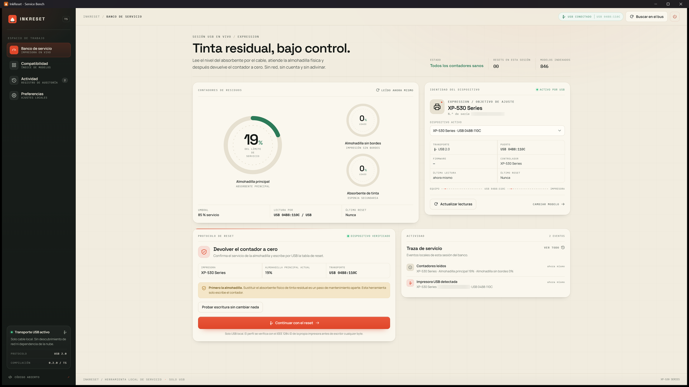
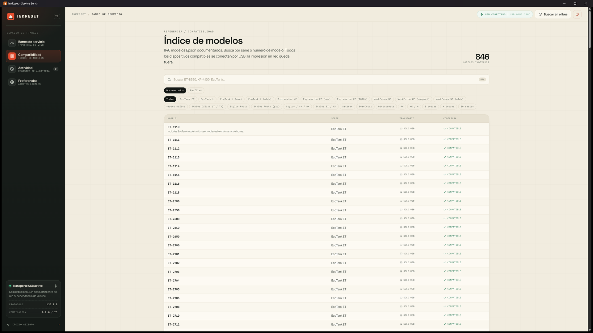
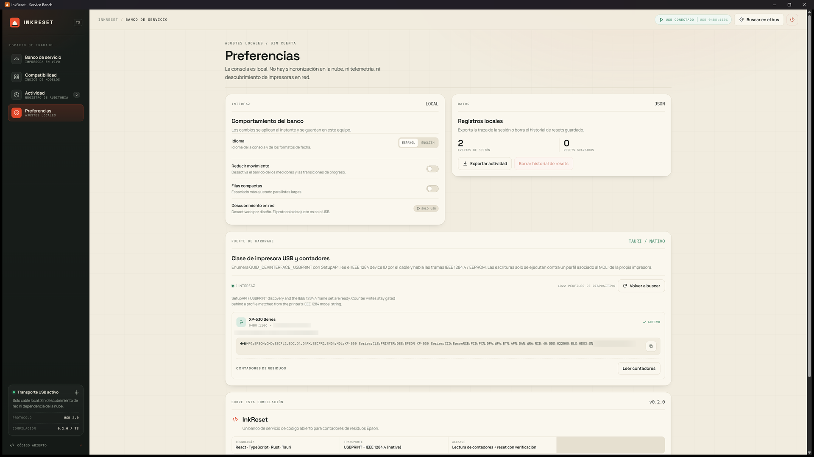

Automatic discovery
On launch it enumerates USB printer interfaces, reads the IEEE 1284 device ID and resolves the model profile from the embedded database.
Read and reset the waste ink pad counter of your Epson over USB. No account, no licence key and no network: the app talks to the printer directly through IEEE 1284.4.

A counter reset is not maintenance. It does not clean, replace or empty the physical absorber. Service the pad first: resetting a saturated pad can make ink overflow.
InkReset has only been tested end to end on an Epson XP-530
(MDL:XP-530 Series): reading both counters and the safe write test.
The embedded database covers many other Epson models and the protocol should work on them, but those models are untested. On a different printer, run a read and the safe write test first, then reset at your own risk. The authors accept no responsibility for damage caused to other printers.
Everything on screen is a real USB transaction executed by the native Rust bridge.
On launch it enumerates USB printer interfaces, reads the IEEE 1284 device ID and resolves the model profile from the embedded database.
Every counter the model exposes, with raw register values and the full-scale value the printer itself reports.
The model is re-read from the device and has to be typed exactly. Without a verified reset table, nothing is written.
A self-test writes one EEPROM byte back unchanged, proving the whole write path works before you touch a counter.
No telemetry, no licence server and no outbound request. Settings and history stay on the machine.
Spanish by default, English available in Settings. No feature depends on the language.
Taken with a real XP-530 connected over USB.


Windows 10 or 11, 64-bit. No account, no key, no activation.
Installs the app and creates a shortcut. It can be removed from Settings like any other program.
A single executable. Handy for a service USB stick.
For group policy or endpoint management tooling.
Writing to a printer EEPROM is irreversible. The app is built around that.
MDL: string has to be typed.Yes. The code is MIT and the published builds are free. No “pro” edition, no key and no reset limit.
No. The app opens no network connections: it talks to the printer over USB and keeps settings in local storage. No telemetry, no remote logging.
Probably, but only an XP-530 is verified. The database ships 1,022 printer records and 371 spec keys, and roughly 930 resolve to a usable service block. If your model is untested, run a read and the safe write test first, and accept the risk.
An internal counter the printer increments on every head cleaning. When it reaches the limit the firmware stops printing even though the printer still works. Resetting returns the counter to zero; it does not replace the pad, which is still soaked with ink.
No. There is no activation, no server and no account check. The executable works offline.
The USB bridge uses Windows SetupAPI and the USBPRINT device. On
Linux and macOS the front end builds and runs, but the bridge reports itself as
unavailable and no device is contacted.
When an Epson reports that the waste ink pad is at the end of its service life, the firmware blocks printing even though the print head may still be fine. The message refers to an internal counter that adds up every cleaning cycle; the physical absorber is a separate thing and has to be dealt with too.
MDL: string.Replace or clean the pad. A zeroed counter over a saturated absorber only delays the problem and can end in a spill inside the machine. If you would rather not take the printer apart, have the maintenance done by a service centre and use InkReset for the software side only.
The embedded database targets the Epson family with IEEE 1284.4 support, from Expression Home and WorkForce to EcoTank and the XP, WF, ET and L series. Even so, the only model verified on hardware is the XP-530.